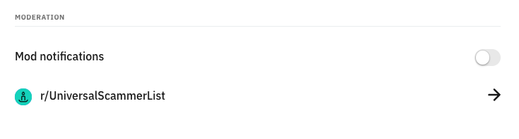
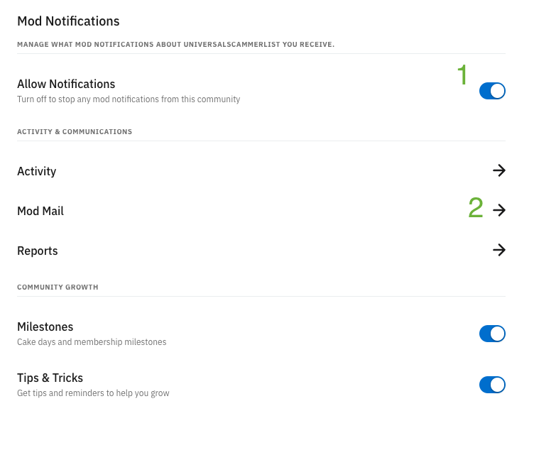

USL Notification Management
If you're reading this, you've joined as a mod of r/UniversalScammerList. When new mods join, they often have their notifications misconfigured and get irritated at the number of new notifications they are receiving from joining this sub. If this is you, read on to learn how to reduce or eliminate the amount of notifications you get.
-
Step 1: Navigate to https://new.reddit.com/settings/notifications. NOTE: This is new reddit because that's the easiest way to manage this setting. You do NOT have to use new reddit before or after this guide, just for the 10 seconds it takes to complete these steps.
-
Step 2: Scroll down to the "Mod notifications" section. From here, either click the toggle to disable all mod notifications or click the arror next to the r/UniversalScammerList row to modify notification settings just for r/UniversalScammerList.

-
Step 3: If you want to manage notifications just for r/UniversalScammerList, click the arrow as mentioned above, then either disable all notifications by hitting the toggle (1) or just disable modmail notifications by clicking on the arrow (2) and hitting the toggle.

And that's it, you're done! That's a super easy guide to reducing the number of notifications you get from joining r/UniversalScammerList. Please feel free to engage the rest of the mod team if you have any questions.